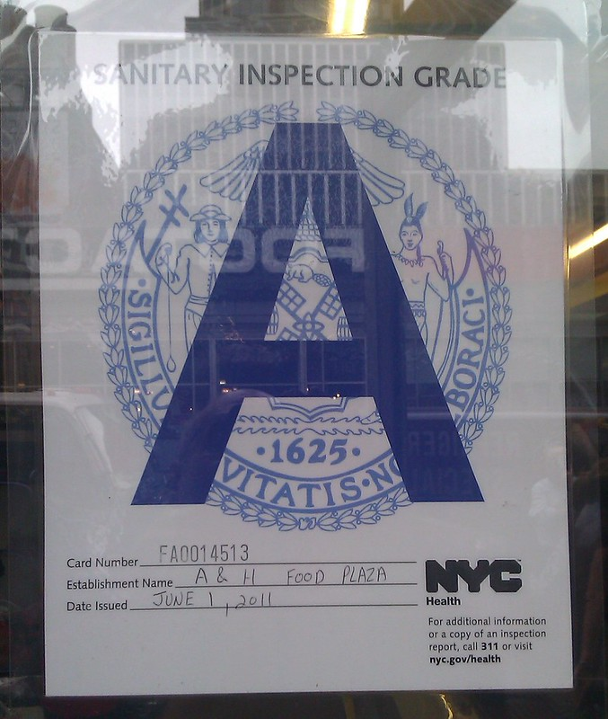

About 1 in 23 restaurants across New York City that are still open have evidence of mice and rats active in their kitchen.

While Hollywood charmed everyone with a rat cooking behind the kitchen, an analysis of New York City’s restaurants inspection data found something less appealing: evidence of mice appears to be in at least 4.4% of restaurant violation records in 2026.
The Department of Health and Mental Hygiene has closed134 restaurants in only the last 90 days, according to NYC Restaurant Data. But that doesn't mean that restaurants are safe from having other violation points.
Kriz Welz, executive chef at Hawkmoor restaurant says that New York City presents a unique set of challenges for restaurants. Aging infrastructure, neighborhood business, construction and street level garbage are some of the most common contributors to rodent activity.
“Even an exceptionally clean and well maintained restaurant can be affected by external conditions,” Welz said. “The responsibility of the restaurant is to take every preventive measure and respond immediately when an issue is identified.”
According to the DOHMH website, the Health Department inspects at least 24,000 restaurants a year according to the City and State safety regulations. Restaurants can score between 0 and 13 points to earn A, 14 to 27 points to receive a B and 28 and more points earn a C.
Violations fall into three categories: public health hazards, such as active pests which can force a closure; critical violation, like cross-contamination, and general violation such as cleanliness and maintenance.
Widespread evidence of mice in food preparation or storage areas can be treated as public health hazards and lead to the closure of the restaurant.
The question is, how is a restaurant still operating with evidence of mice?
The DOHMH did not respond to a request for comment by publication time.
Our analysis of the data shows that mice turn up at every grade. B-rated restaurants had the highest rate of mice citations, 7.6% compared with 2.9% A-rated ones.
Inspections in restaurants can result in closure or pointing out what is wrong to fix. For customers, the letter is a starting point, not a guarantee.